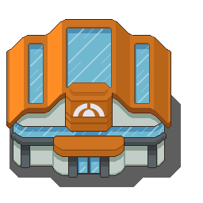
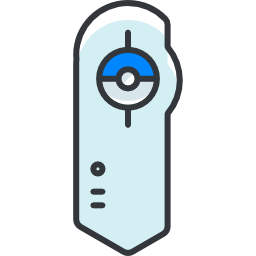
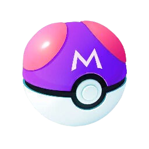

<ion-menu contentId="main-content">
  <ion-header>
    <ion-toolbar>
      <ion-title>PokeMenú</ion-title>
    </ion-toolbar>
  </ion-header>
  <ion-content>
    <ion-list>
      <ion-menu-toggle>
        <ion-item [routerLink]="['/home']" [routerLinkActive]="['activatedLink']">
          <ion-label style="display: flex; flex-flow: row; align-items: center;">&nbsp;Inici</ion-label>
        </ion-item>
      </ion-menu-toggle>
      <ion-menu-toggle>
        <ion-item [routerLink]="['/pokedex']" [routerLinkActive]="['activatedLink']">
          <ion-label style="display: flex; flex-flow: row; align-items: center;">&nbsp;Pokédex</ion-label>
        </ion-item>
      </ion-menu-toggle>
      <ion-menu-toggle>
        <ion-item [routerLink]="['/mis-pokes']" [routerLinkActive]="['activatedLink']">
          <ion-label style="display: flex; flex-flow: row; align-items: center;">&nbsp;Els meus Pokémon</ion-label>
        </ion-item>
      </ion-menu-toggle>

    </ion-list>
  </ion-content>
</ion-menu>
